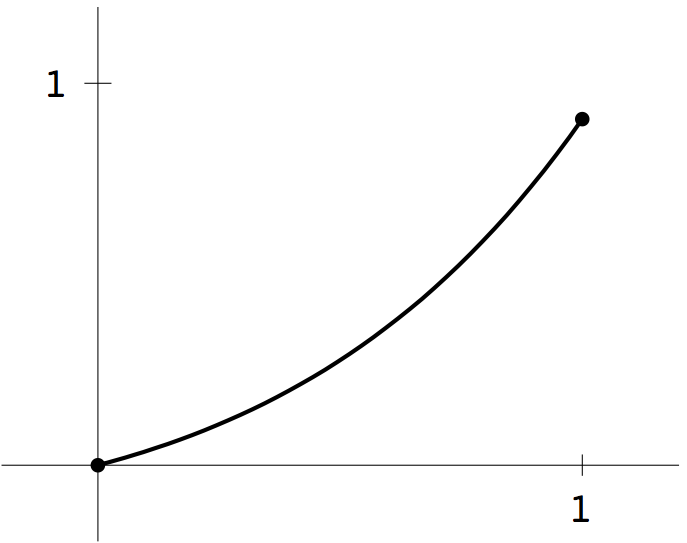
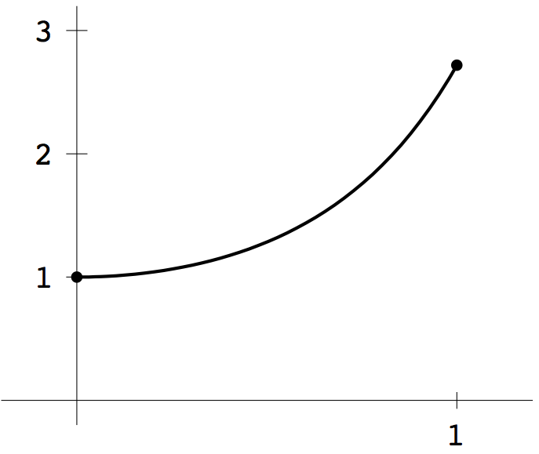
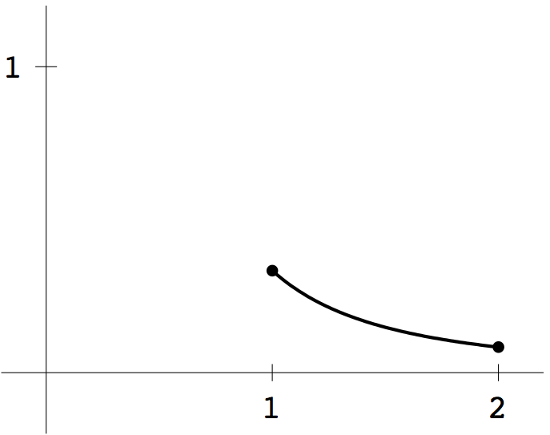
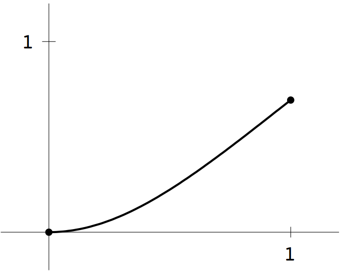
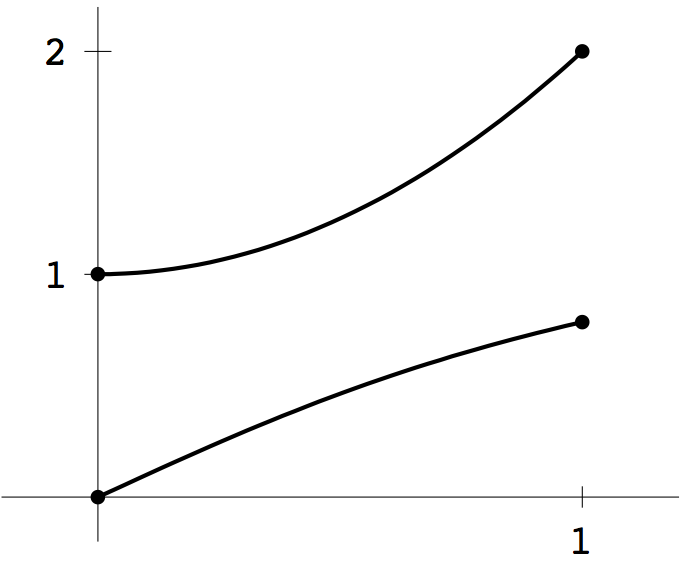
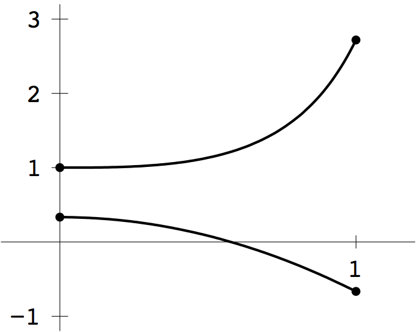

function ydot=de(t,y) ydot=[0;0]; ydot(1)=y(2); ydot(2)=y(1)+2*exp(t)/3;and a function file F.m to represent the shooting method problem, as in (7.5).
function z=F(s);
a=0;b=1;yb=exp(1)/3;
[t,y]=ode45('de',[a,b],[0,s]);
z=y(end,1)-yb;
By trial and error, we find that \(F(0.2) = -0.1567\) and \(F(0.4) = 0.0783\). The interval \(0.2< s< 0.4\)
is a bracketing interval, and we can apply the Bisection Method to find a
root of \(F\). The Matlab commands
>> F=inline('F(x)','x');
>> s=bisect(F,0.2,0.4,0.5e-6);
make the Matlab function F available as in inline function, and
use the program bisect.m to calculate \(s\) to within 6 decimal places. The result is
\(s= 0.333333\). Finally, the Matlab command ode45 can be used to plot the solution:
>> [t,y]=ode45('de',[0,1],[0,s]);
>> plot(t,y(:,1))

1 (b) As a first-order system, the differential equation is
\begin{eqnarray*}
y_1' &=& y_2\\
y_2' &=& (2+4t^2)y_1
\end{eqnarray*}
Write function files for the differential equation and \(F\) as in part (a). Note that \(F(-1)F(2)< 0\),
so there is a root \(s\) in \([-1,2]\). The Bisection Method converges to \(s=0\).
The solution is plotted below.


3 (b) Proceed as in Computer Problem 1. Note that \(F(-1)F(1)< 0\). The Secant Method converges to \(s=0\). The solution is plotted below.

function ydot=de(t,y) ydot=[0;0]; ydot(1)=1/y(2); ydot(2)=t+tan(y(1));and a function file F.m to represent the shooting method problem, as in (7.5).
function z=F(s);
a=0;b=1;yb=2;
[t,y]=ode45('de',[a,b],[0,s]);
z=y(end,2)-yb;
By trial and error, we find that \(F(3/4) = -0.0622\) and \(F(2) = 0.7452\). The interval \(3/4< s< 2\)
is a bracketing interval, and
either the Bisection Method or Secant Method can be applied to converge to the root \(s=y_2(0)=1\).
The Matlab command ode45 can be used to plot the solution:
>> [t,y]=ode45('de',[0,1],[0,s]);
>> plot(t,y)
The solutions \(y_1(t)\) and \(y_2(t)\) are plotted below.

5 (b) Similar to part (a). There will be convergence to the root \(s=y_2(0)=1/3\), and the solutions \(y_1(t)\) and \(y_2(t)\) are plotted below.
